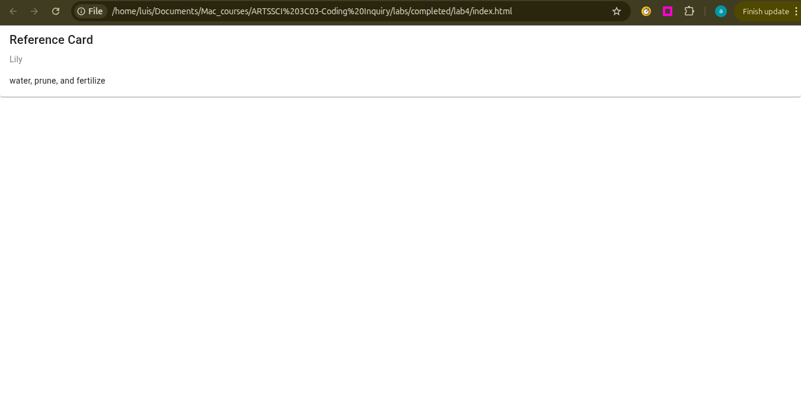
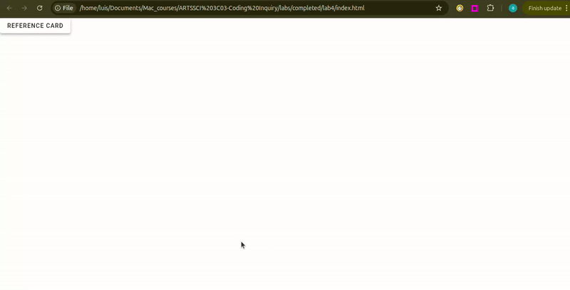
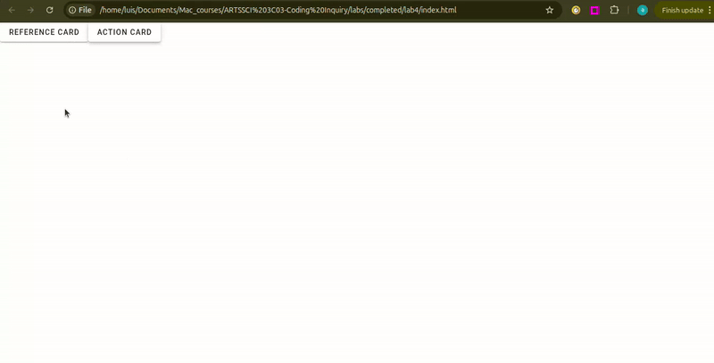
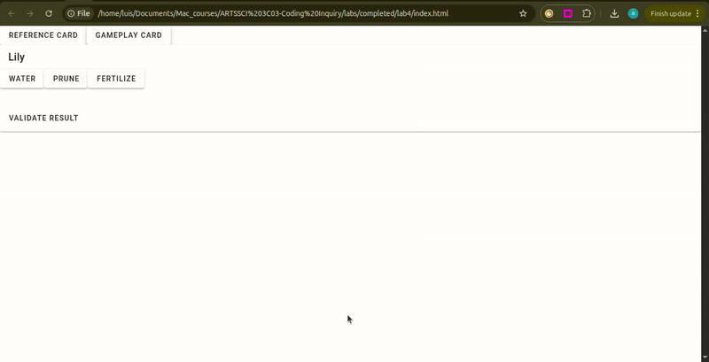
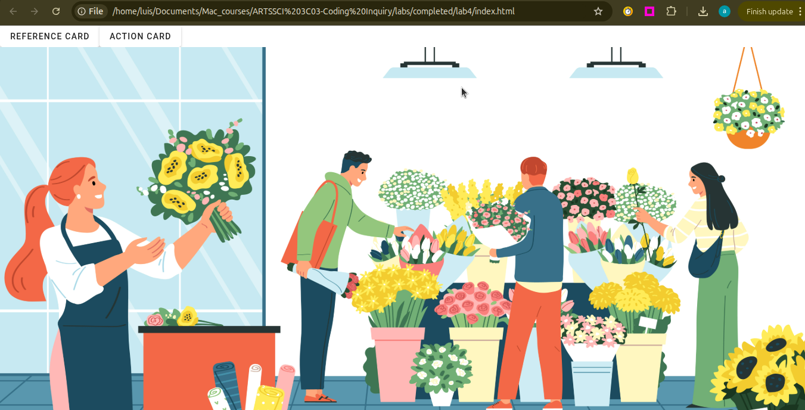
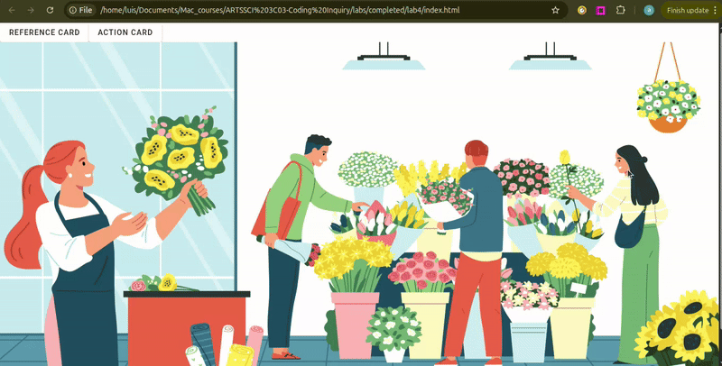
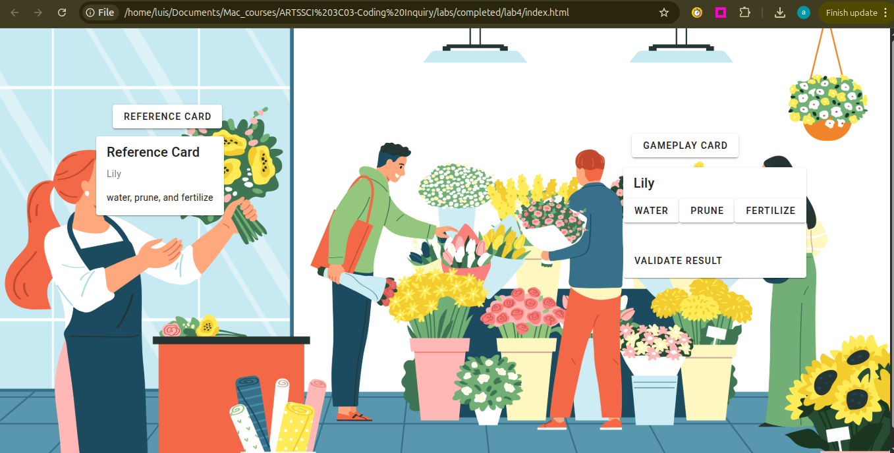

Lab 4: Building a Point-and-Click Game
General Description
Over the next two labs, you will transition from displaying static cards to building a simple interactive
game.
You will get introduced to the concepts of functions, conditional logic, and
reactivity to
handle changes in the user interface and validate user choices, respectively.
Learning Objectives
- Manage application reactivity and state using JavaScript functions.
- Implement conditional logic (if/else) to create user conditions and toggles.
Table of Contents
- Pre-requisite: Setup Your Project
- Choose a Theme
- Create Reference Card
- Create Gameplay Card
- Validate and Show Result
- Styling the Game Environment
- Optional Challenge
Pre-requisite: Setup Your Project
- Create a new folder for this lab.
- Inside your new folder create the app.js and index.html files with their starter/boilerplate code. Refer to Lab 2, section "Setup Starter Vuetify Code" to complete this step.
- Finally, in the section
const { createApp} = Vuein app.js, import therefcommand which we will use in the next steps below:
const { createApp, ref } = Vue;
Choose a Theme
Point-and-click adventure games are those where the player controls their character through a computer mouse. Often, these games come down to collecting items for the character's inventory, and figuring when is the right time to use that item; the player would need to use clues from the visual elements of the game, descriptions of the various items, and dialogue from other characters to figure this out. Read more.
In this lab, the player will consult a reference card to learn a plant's needs and then click the correct actions in the right order to help it grow. You can use this same theme or choose a different one of your own, as long as it follows the same logical steps.
- Brainstorm a theme for your interactive game. While this lab uses "Plant Care" as an example, you are encouraged to adapt the theme to any subject (e.g., Space Repair, Cooking, or Pet Care).
- Identify one primary subject and 3-4 action verbs that the user must perform in a specific order to succeed (e.g., "Pour," "Mix," "Bake"). See more examples in the table below.
| Theme | Subject | Action Verb 1 | Action Verb 2 | Action Verb 3 |
|---|---|---|---|---|
| Plant Care | Lily | Water | Prune | Fertilize |
| Bakery | Cake | Whisk | Knead | Bake |
| Space Repair | Satellite | Calibrate | Recharge | Deploy |
| Coffee Shop | Latte | Grind | Steam | Pour |

Create Reference Card
The "reference card" will act as the manual for your game. It will tell the player the sequence of actions they have to follow to succeed.
Describe the Subject and Action Verbs with Variables
- In app.js, define your subject's name and the action verbs using variables. Refer to Lab 2, section "Describe Your Theme With Variables", to complete this step.
- In index.html, add a card to display your variables using
{{ }}to pull the data from app.js. Refer to Lab 2, section "Display Your Theme Data in a Card ", to complete this step.

Adding Toggle Functionality to Open/Close the Reference Card
In this step you will create a reactive variable and a function to toggle between
true and false to
open or
close your reference card. You will then connect this function to a button using v-btn.
- Create a new variable with a name like
showReferenceCardand an initial value offalse. - Inside your
v-cardfrom the previous step, add the commandv-ifand the name of your variable as the value. If you refresh the page, you should see your card disappear. - Now, let's define a function to toggle
showReferenceCardbetweenfalseandtrueto allow the card to open or close. In app.js, create an empty function with a name liketoggleOpenCloseReferenceCard. Follow the example below: - Inside the function, add an
if-elsestatement to alternate fromfalsetotrueeach time the function is executed/triggered. Follow the example below: - To trigger the function, add a button using
v-btnand the command@clickwith the name of your function as the value. - Update your
showReferenceCardvariable value by adding the keywordref. This makes the variable reactive, ensuring that when you click the toggle button, the interface updates automatically. - Now, save your changes, refresh your page in the browser, and click the button to see your card open and close.
const showReferenceCard = false
<v-card v-if="showReferenceCard">
v-if is used for conditional
rendering.
When showPlantCard is true, Vuetify adds the card to the page; when it
is
false,
Vuetify removes it.
function toggleOpenCloseReferenceCard() {}
function toggleOpenCloseReferenceCard() {
if (showReferenceCard.value == false) {showReferenceCard.value = true}
else {showReferenceCard.value = false}
}
if (condition) {// code to execute if the condition is true}
else {// code to execute if the condition is false}
<v-btn @click="toggleOpenCloseReferenceCard">Reference Card</v-btn>
const showReferenceCard = ref(false);
reactivity, where values like the one
inside your variable showReferenceCard can change behind the scenes when the user
interacts with it. ref() is used to create a reactive reference to
any value including strings, numbers, booleans, objects, and arrays.

Create Gameplay Card
In this step, you'll build the gameplay card with action buttons and a function to save the user's choices.
Create Variables to Save the User Actions
- In app.js, create the reactive variables to save the user's choices. Since no actions have been
taken yet,
set these
variables to
nullas a placeholder until the user starts clicking the buttons. Follow the example below:
const userAction1 = ref(null)
const userAction2 = ref(null)
const userAction3 = ref(null)
null value denotes the absence of a
value or serves as a placeholder
for a value that isn't present but might be present in the future.
Create a Function to Record the User Actions
Now, define a function that records each click. When a player selects an action like "water" or "prune", the function will save that choice into your variables from the previous step.
-
Define an
empty function with a name like
recordUserAction. -
Add a parameter to the function. Name the parameter something like
action. -
Inside the function, add an
if-elsestatement to check your variables in order. If a variable is empty (null), the function will fill it with the clicked action.
function recordUserAction() {}
function recordUserAction(action) {}
function recordUserAction(action) {
if (userAction1.value === null) {
userAction1.value = action;
} else if (userAction2.value === null) {
userAction2.value = action;
} else if (userAction3.value === null) {
userAction3.value = action;
}
}
else if is important in this function, since
it will tell the
computer to stop looking once it finds the first empty slot (variable).
Create Card with Action Buttons
Now, let's create the card containing the action buttons. These buttons will trigger the recording function you created in the previous step.
- In index.html, create a new card. Use your subject’s name as the title, then add a button for each action. See the example below:
-
Add the
@clickcommand to each button using yourrecordUserActionfunction. Be sure to pass the action name inside single quotes so the function knows which button was clicked. Follow the example below:
<v-card>
<v-card-title>{{ plantName }}</v-card-title>
<v-btn>water</v-btn>
<v-btn>prune</v-btn>
<v-btn>fertilize</v-btn>
</v-card>
<v-card>
<v-card-title>{{ plantName }}</v-card-title>
<v-btn @click="recordUserAction('water')">water</v-btn>
<v-btn @click="recordUserAction('prune')">prune</v-btn>
<v-btn @click="recordUserAction('fertilize')">fertilize</v-btn>
</v-card>
Adding Toggle Functionality to Open/Close the Gameplay Card
- Following step 3.2 above, create a new variable and function that uses an
if-elsestatement to toggle betweentrueandfalse. Then, connect this variable and function to the card and the new button usingv-ifand@click, respectively.

Validate and Show Result
To tell the player if they succeeded, we need a variable to store the 'success/fail' message and a function that compares the actions to the reference card.
- In
app.js, create a new variable calledresultwith anullvalue. - Create a function with a name like
validateResult. This function will use anif-elsestatement to check if all three user actions match the correct references. ===checks for equality. It checks if the value on the left is exactly the same as the value on the right.&&allows us to check multiple conditions at once. The whole statement is only true if every part is true.- Now that we have the validate-result logic, let's visualize it. Inside the gameplay card, add a
<v-card-text>to display theresultvariable to the player. - Finally, inside your gameplay card, add a
v-card-actionsand av-btnto trigger the validation function using the@clickcommand.
const result = ref(null)
function validateResult() {
if (userAction1.value === actionReference1 &&
userAction2.value === actionReference2 &&
userAction3.value === actionReference3) {
result.value = "Your plant is thriving!";
} else {
result.value = "Your plant withered.";
}
}
<v-card-text>
{{ result }}
</v-card-text>
<v-card-actions>
<v-btn @click="validateResult">Validate Result</v-btn>
</v-card-actions>

Styling the Game Environment
In this step, you will transform your user interface into a game world using a background image, positioning your buttons, and styling your cards.
Add a Background Image
- Find an image online related to your theme and subjects. Save your image in your lab folder. For this lab, I am using a flower shop image from https://www.freepik.com/, since the theme is "Plant Care" and the subjects are plants,
- Create a variable to store your image and
<v-img>to display it. Refer to Lab 2, section "Display Your Theme Data in a Card" to complete this step.

Positioning the Buttons
Last lab, we used Vuetify's 12-column grid, which allows organizing elements in a structured grid. This time, however, we need the buttons to layer in different places on top of our image. To achieve this, we will use absolute positioning, a system that is based on screen coordinates.
- In app.js, add the following helper function that will allow you to locate the screen coordinates:
- Add this function to your
v-imageto trigger it using@click. - To print the coordinates, open the browser console tools in your browser. Click the three dots on the top right, then More Tools, then Developer Tools. See video guide below:
- Now that you have the x and y coordinates, start by adding the command
stylewith the valueposition:absolute;andz-index:1;to the reference card button you created before. - Then, inside
styleadd your x coordinate to the commandleftand your y coordinate to the commandtop: - Repeat the same process with the reference card, the gameplay button, and the gameplay card.
function findCoordinates(event) {
const windowWidth = window.innerWidth;
const windowHeight = window.innerHeight;
const xPercent = (event.clientX / windowWidth) * 100;
const yPercent = (event.clientY / windowHeight) * 100;
console.log(`X: ${xPercent.toFixed(2)}%, Y: ${yPercent.toFixed(2)}%`);
}
<v-img :src="image" @click="findCoordinates"></v-img>

<v-btn style="position:absolute; z-index:1;" @click="toggleOpenCloseReferenceCard">Reference Card</v-btn>
<v-btn style="position:absolute; z-index:1; left: 12.64%; top:17.10%;" @click="toggleOpenCloseReferenceCard">Reference Card</v-btn>

Styling Your Cards
- Modify the width and color of your cards. Refer to Refer to Lab 2, section "Style the Card" to complete this step.
Challenge: Expand Your Game
Try expanding your game by adding more subjects to the reference card and more gameplay cards.
Wrap Up & Saving Your Work
Congratulations! You've reached the end of this lab.
What You Achieved Today:
- State Management: You used ref() to create "reactive" variables that allow the website to update instantly when data changes.
- Game Logic & Validation: You built a function using Conditional Statements (if-else) and logical Operators (&&) to determine a win or loss.
- Responsive Positioning: You used math and screen percentages to place elements precisely so your game works on any screen size.
Save for Next Week:
There is no formal submission today, however, please ensure your project is saved correctly in your computer and ready to use next class.